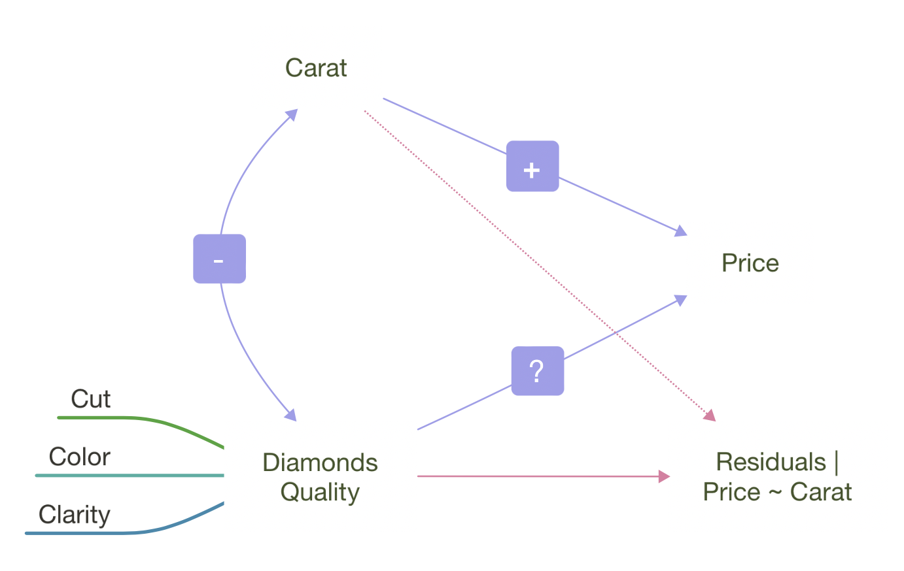
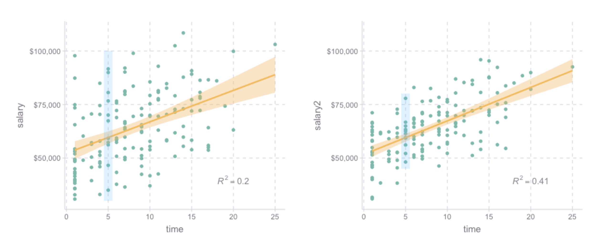
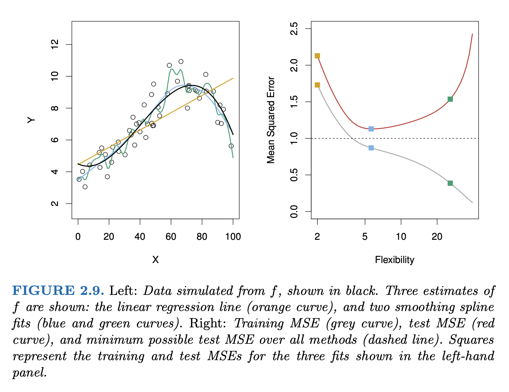

Load Packages
# numerical calculation & data frames import numpy as npimport pandas as pd# visualization import matplotlib.pyplot as pltimport seaborn as snsimport seaborn.objects as sofrom sbcustom import * # statistics import statsmodels.api as sm
Options
# pandas options "mode.copy_on_write" , True )= 2 = ' {:.2f} ' .format # pd.reset_option('display.float_format') = 7 # Numpy options = 2 , suppress= True )
Why are low quality diamonds more expensive?
= sm.datasets.get_rdataset("diamonds" , "ggplot2" ).data# cut, color, clarity 모두 categorical type으로 변형 "cut" ] = pd.Categorical("cut" ], = ["Fair" , "Good" , "Very Good" , "Premium" , "Ideal" ],= True "color" ] = pd.Categorical("color" ], = ["D" , "E" , "F" , "G" , "H" , "I" , "J" ],= True "clarity" ] = pd.Categorical("clarity" ], = ["I1" , "SI2" , "SI1" , "VS2" , "VS1" , "VVS2" , "VVS1" , "IF" ],= True
= rangeplot(diamonds, x= "cut" , y= "price" )= rangeplot(diamonds, x= "color" , y= "price" )= rangeplot(diamonds, x= "clarity" , y= "price" )
Price and carat
다이아몬드의 퀄리티(cut, color, clarity)가 좋을수록 가벼워짐
= (= 'carat' , y= 'price' )= .1 ))= rangeplot(diamonds, x= "cut" , y= "carat" )= rangeplot(diamonds, x= "color" , y= "carat" )= rangeplot(diamonds, x= "clarity" , y= "carat" )

우선, 2.5캐럿 이하로 제한하고,
가격과 캐럿을 log-transform하여 선형모형을 세움
이 모형으로 잔차를 구하고,
다이아몬드의 퀄리티와 이 잔차와의 관계를 살펴봄
= diamonds.query("carat < 2.5" ).assign(= lambda x: np.log2(x.price), = lambda x: np.log2(x.carat)
= 'lcarat' , y= 'lprice' )= ".6" , alpha= .1 ))5 ))
# 캐럿으로 가격을 예측하는 선형모형 from statsmodels.formula.api import ols= ols("lprice ~ lcarat" , data= diamonds2).fit()
Intercept 12.19
lcarat 1.68
dtype: float64
Model: \(\displaystyle lprice = 12.19\cdot lcarat + 1.68 + e\)
# data range from the carat variable = pd.DataFrame({"carat" : []})"carat" ]= np.linspace(diamonds2.carat.min (), diamonds2.carat.max (), 20 )= grid.assign(= lambda x: np.log2(x.carat),= lambda x: mod_diamonds.predict(x.lcarat),= lambda x: 2 ** x.lprice
carat lcarat lprice price
0 0.20 -2.32 8.29 312.79
1 0.32 -1.64 9.43 691.47
2 0.44 -1.18 10.21 1182.86
.. ... ... ... ...
17 2.25 1.17 14.16 18318.33
18 2.37 1.24 14.29 19999.52
19 2.49 1.32 14.41 21740.08
[20 rows x 4 columns]
= 'carat' , y= 'price' )= ".6" , alpha= .1 ))= grid.carat, y= grid.price)
캐럿과 가격은 비선형적인 관계에 있으며, 이를 log-transform하여 선형적인 관계로 만들어줌
또한, variation은 캐럿이 증가함에 따라 비례해서 커지는 양상을 보임; 이 또한 log-transform을 통해 해결되었음
Residual plot: 위 모형은 충분히 좋은가?
"lresid" ] = mod_diamonds.resid= 'lcarat' , y= 'lresid' )= .1 ))
이제, 다이아몬드의 퀄리티와 위에서 구한 가격의 residuals과의 관계를 살펴보면,
y축은 log2 scale로 변환된 것이므로, 원래 단위로 이해하면,
residual +1은 캐럿으로 예측되는 가격(residual = 0)보다 가격이 2배 비싸다는 것을 의미
residual -1은 캐럿으로 예측되는 가격(residual = 0)보다 가격이 1/2배 낮다는 것을 의미
이는 캐럿의 영향을 고려한 후에 , 다이아몬드의 퀄리티 각각이 가격에 (상대적으로) 얼마나 영향을 주는지를 가늠할 수 있음
= rangeplot(diamonds2, x= "cut" , y= "lresid" )= rangeplot(diamonds2, x= "color" , y= "lresid" )= rangeplot(diamonds2, x= "clarity" , y= "lresid" )
= ols("lprice ~ lcarat + cut" , data= diamonds2).fit()= ols("lprice ~ lcarat + color" , data= diamonds2).fit()= ols("lprice ~ lcarat + clarity" , data= diamonds2).fit()# mod.params
Intercept 11.84
cut[T.Good] 0.23
cut[T.Very Good] 0.34
cut[T.Premium] 0.33
cut[T.Ideal] 0.45
lcarat 1.70
dtype: float64
Intercept 12.37
color[T.E] -0.04
color[T.F] -0.05
color[T.G] -0.08
color[T.H] -0.27
color[T.I] -0.41
color[T.J] -0.61
lcarat 1.73
dtype: float64
Intercept 11.24
clarity[T.SI2] 0.66
clarity[T.SI1] 0.87
clarity[T.VS2] 1.08
clarity[T.VS1] 1.15
clarity[T.VVS2] 1.38
clarity[T.VVS1] 1.45
clarity[T.IF] 1.58
lcarat 1.81
dtype: float64
다이아몬드의 3가지 퀄리티가 서로 연관되어 있다면?
= diamonds.groupby(["cut" , "color" ]).size().reset_index(name= "n" )= diamonds.groupby(["cut" , "clarity" ]).size().reset_index(name= "n" )= diamonds.groupby(["color" , "clarity" ]).size().reset_index(name= "n" )
= so.Plot(table1, x= "cut" , y= "color" , pointsize= "n" , color= "n" ).add(so.Dot()).scale(pointsize= (5 , 30 ))= so.Plot(table2, x= "cut" , y= "clarity" , pointsize= "n" , color= "n" ).add(so.Dot()).scale(pointsize= (5 , 30 ))= so.Plot(table3, x= "color" , y= "clarity" , pointsize= "n" , color= "n" ).add(so.Dot()).scale(pointsize= (5 , 30 ))
A more complicated model
다이아몬드의 3가지 퀄리티와 carat이 모두 연관되어 있어, 각각의 고유한 효과를 보기 위해 다음과 같이 모든 예측변수들을 포함하는 모형을 세울 수 있음
= ols('lprice ~ lcarat + cut + color + clarity' , data= diamonds2).fit()
= pd.DataFrame({"cut" : ["Fair" , "Good" , "Very Good" , "Premium" , "Ideal" ]})"color" ] = diamonds2.color.mode()[0 ]"clarity" ] = diamonds2.clarity.mode()[0 ]"lcarat" ] = diamonds2.lcarat.median()
cut color clarity lcarat
0 Fair G SI1 -0.51
1 Good G SI1 -0.51
2 Very Good G SI1 -0.51
3 Premium G SI1 -0.51
4 Ideal G SI1 -0.51
즉, G 컬러이고, SI1의 투명도와, 로그 캐럿 -0.51 무게인 다이아몬드에 대해서, cut이 좋아질수록 가격이 얼마나 올라가는지를 예측해 본다면,
"lpred" ] = mod_full.predict(grid)"pred" ] = 2 ** grid.lpred
cut color clarity lcarat lpred pred
0 Fair G SI1 -0.51 10.99 2035.36
1 Good G SI1 -0.51 11.10 2202.21
2 Very Good G SI1 -0.51 11.16 2285.37
3 Premium G SI1 -0.51 11.19 2337.24
4 Ideal G SI1 -0.51 11.22 2388.52
= 'cut' , y= 'pred' )= "o" ))= (1300 , 4100 ))
cut[T.Good] 1.08
cut[T.Very Good] 1.12
cut[T.Premium] 1.15
cut[T.Ideal] 1.17
dtype: float64
cut 대신 color와 clarity에 대해서도 그려볼 것
Residuals 분석
"lresid_full" ] = mod_full.resid
= 'lcarat' , y= 'lresid_full' )= .1 ))
이상치들만 자세히 들여다보면,
from numpy import abs "abs(lresid_full) > 1" ).assign(= lambda x: 2 ** mod_full.predict(x[["lcarat" , "cut" , "color" , "clarity" ]]),= lambda x: x.price - x.pred_full,"resid_full" )
carat cut color clarity depth table price x y z \
22440 2.46 Premium E SI2 59.70 59.00 10470 8.82 8.76 5.25
41918 1.03 Fair E I1 78.20 54.00 1262 5.72 5.59 4.42
38153 0.25 Fair F SI2 54.40 64.00 1013 4.30 4.23 2.32
... ... ... ... ... ... ... ... ... ... ...
5325 0.61 Good F SI2 62.50 65.00 3807 5.36 5.29 3.33
8203 0.51 Fair F VVS2 60.70 66.00 4368 5.21 5.11 3.13
21935 1.01 Fair D SI2 64.60 58.00 10011 6.25 6.20 4.02
lprice lcarat lresid_full pred_full resid_full
22440 13.35 1.30 -1.17 23630.26 -13160.26
41918 10.30 0.04 -1.07 2650.65 -1388.65
38153 9.98 -2.00 1.94 264.51 748.49
... ... ... ... ... ...
5325 11.89 -0.71 1.31 1539.74 2267.26
8203 12.09 -0.97 1.36 1706.07 2661.93
21935 13.29 0.01 1.30 4052.40 5958.60
[16 rows x 15 columns]
좀 더 체계적으로 다음과 같이 모형의 복잡성 이 올라감에 따라 예측의 정확성이 어떻게 변하는지 알아보면
= diamonds.query("carat < 2.5" ).assign(= lambda x: np.log2(x.price), = lambda x: np.log2(x.carat)# nested models = ols("lprice ~ lcarat" , data= diamonds2).fit()= ols("lprice ~ lcarat + clarity" , data= diamonds2).fit()= ols("lprice ~ lcarat + cut + color + clarity" , data= diamonds2).fit()
code
= diamonds2.assign(= diamonds2_mod1.resid,= diamonds2_mod2.resid,= diamonds2_mod3.resid,= diamonds2_mods.melt(= ["lcarat" , "lprice" ],= ["mod1" , "mod2" , "mod3" ],= "model" ,= "resid" ,= 'lcarat' , y= 'resid' , color= 'model' )= .1 ))"model" )= (8 , 5 ))
code
= 'resid' , color= 'model' )= 50 ))= (5 , 3 ))
code
from statsmodels.tools.eval_measures import rmse, meanabs= [diamonds2_mod1, diamonds2_mod2, diamonds2_mod3]= diamonds2.priceprint ("The prediction accuracy of the models (original unit except R-squared): \n " )for mod in mods:= 2 ** mod.fittedvalues= mod.rsquaredprint (f"R-squared: { R2:.2f} , RMSE: { rmse(y, y_hat):.2f} , " f"MAE: { meanabs(y, y_hat):.2f} "
The prediction accuracy of the models (original unit except R-squared):
R-squared: 0.93, RMSE: 1507.04, MAE:817.34
R-squared: 0.97, RMSE: 1164.81, MAE:623.65
R-squared: 0.98, RMSE: 732.70, MAE:390.61
The prediction accuracy of the models can be evaluated by the following metrics:The strength of association )
변량의 비율로 해석하고 싶다면,
\(\displaystyle\frac{V(predictions)}{V(Y)} + \frac{V(residuals)}{V(Y)} = 1,\) (OLS estimate)
즉, “모형에 의해 설명되는 \(Y\) 변량의 비율 ” + “모형에 의해 설명되지 않는 \(Y\) 변량의 비율 ” = 1\(R^2\) 라고 하고, 결정계수 혹은 R squared라고 부름\(1-R^2\) 는 설명되지 않는 변량의 비율이라고 할 수 있음.\(또한, R\) 은 multiple correlation coefficient라고 부르는데, 이는 \(Y\) 와 예측값 \(\hat Y\) 의 상관계수(Pearson’s correlation coefficient)를 의미함.
비율이 아닌 \(Y\) 의 단위와 동일한 단위로 해석하고 싶다면,
Root-mean-squared deviation/error: \(RMSE = \displaystyle\sqrt{\frac{1}{n} \sum_{i=1}^{n}{(y_i -\hat y_i)^2}}\)
Mean absolute error: \(MAE = \displaystyle\frac{1}{n} \sum_{i=1}^{n}{|~y_i -\hat y_i~|}\) : 이상치에 덜 민감함
Interactions
무게(carat)과 투명도(clarity)가 상호작용하여 가격에 영향을 준다는 가정하에, 즉, 투명도의 레벨에 따라 무게와 가격의 관계가 바뀔 수 있다는 가정
= ols("lprice ~ lcarat + clarity" , data= diamonds2).fit()= ols("lprice ~ lcarat * clarity" , data= diamonds2).fit()
Prediction 비교
code
= diamonds2.assign(= diamonds2_mod2.fittedvalues,= diamonds2_mod2_interact.fittedvalues,= diamonds2_mods.melt(= ["lcarat" , "lprice" , "clarity" ],= ["pred_add" , "pred_interact" ],= "model" ,= "pred" ,= 'lcarat' , y= 'pred' , color= 'clarity' )= so.Nominal(order= diamonds2.clarity.cat.categories.tolist()))"model" )= (8 , 4.5 ))
Residuals 비교
code
= diamonds2.assign(= diamonds_mod2.resid,= diamonds_mod2_interact.resid,= diamonds2_mods.melt(= ["lcarat" , "lprice" , "clarity" ],= ["resid_add" , "resid_interact" ],= "model" ,= "resid" ,= 'lcarat' , y= 'resid' , color= 'clarity' )= .1 ))= (12 , 5 ))"clarity" , "model" )
두 가지 관점

모델 파라미터의 해석
변수와 변수간의 관계성에 초점
변수들을 “동시” 에 고려해서 봄으로써 각 변수들의 “고유한 impact”의 방향과 크기 를 해석하고자 함
ex. ols(lprice ~ lcarat + color + cut + clarity, data = diamonds2)
다이아몬드 투명도(clarity)의 레벨이 하나씩 올라감에 따라 가격형성에 어떻게 혹은 얼마나 영향을 주는가?
clarity[T.SI2] 0.59
clarity[T.SI1] 0.82
clarity[T.VS2] 1.04
...
clarity[T.VVS1] 1.44
clarity[T.IF] 1.58
lcarat 1.89
Length: 8, dtype: float64
또한, 변수간의 상호작용 을 고려하여, 각 변수들의 “고유한 impact”의 방향과 크기 에 대해 정교한 분석이 가능
lcarat 1.60
lcarat:clarity[T.SI2] 0.20
lcarat:clarity[T.SI1] 0.22
lcarat:clarity[T.VS2] 0.18
lcarat:clarity[T.VS1] 0.23
lcarat:clarity[T.VVS2] 0.25
lcarat:clarity[T.VVS1] 0.23
lcarat:clarity[T.IF] 0.27
dtype: float64
(fitted) 모델의 예측 정확성과 특성
Residuals의 분석
변수의 개수가 증가하면, 즉 모델이 복잡할수록 샘플에 대한 예측력은 높아짐.
Bias-Variance Tradeoff
An Introduction to Statistical Learning (2e) by Gareth James, Daniela Witten, Trevor Hastie, and Robert Tibshirani
Exercises
샌프란시스코행 항공편의 도착은 왜 지연되었는가? nycflights13
Linear model: arr_delay ~ hour + origin + carrier + season + dow
# import the data = sm.datasets.get_rdataset('flights' , 'nycflights13' ).data# convert the date column to a datetime object "time_hour" ] = pd.to_datetime(flights["time_hour" ])# add a column for the day of the week "dow" ] = ("time_hour" ]str [:3 ]"category" )"Sun" , "Mon" , "Tue" , "Wed" , "Thu" , "Fri" , "Sat" ])# add a column for the season "season" ] = np.where(flights["month" ].isin([6 , 7 ]), "summer" , "other month" )
값을 대체하는 방식
# with assign = lambda x: np.where(x.month.isin([6 , 7 ]), "summer" , "other month" )# pd.eval = lambda x: np.where(pd.eval ('x.month in [6, 7]' ), "summer" , "other month" )# apply with if-else "month" ].apply (lambda x: "summer" if x in [6 , 7 ] else "other month" )# appply with match def get_season(mth):match mth:case 6 | 7 :return "summer" case _:return "other month" "month" ].apply (get_season)# map with dictionary "month" ].map ({6 : "summer" , 7 : "summer" }).fillna("other month" )
# filter out the flights to SFO = flights.query('dest == "SFO" & arr_delay < 500' ).copy()
from statsmodels.formula.api import ols= ols("arr_delay ~ hour + origin + carrier + season + dow" , data= sfo).fit()
앞서 탐색적 분석을 한 Saratoga 집값을 예측하는 모형을 세워 분석해보고, 모형의 파라미터도 함께 해석해보세요.
Data on houses in Saratoga County, New York, USA in 2006
= sm.datasets.get_rdataset("SaratogaHouses" , "mosaicData" ).data